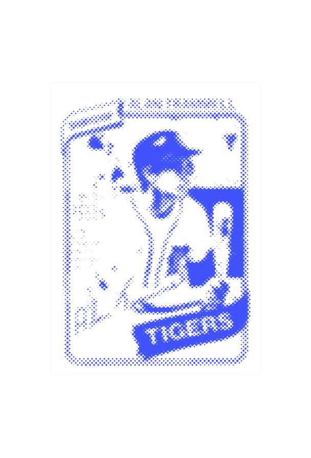
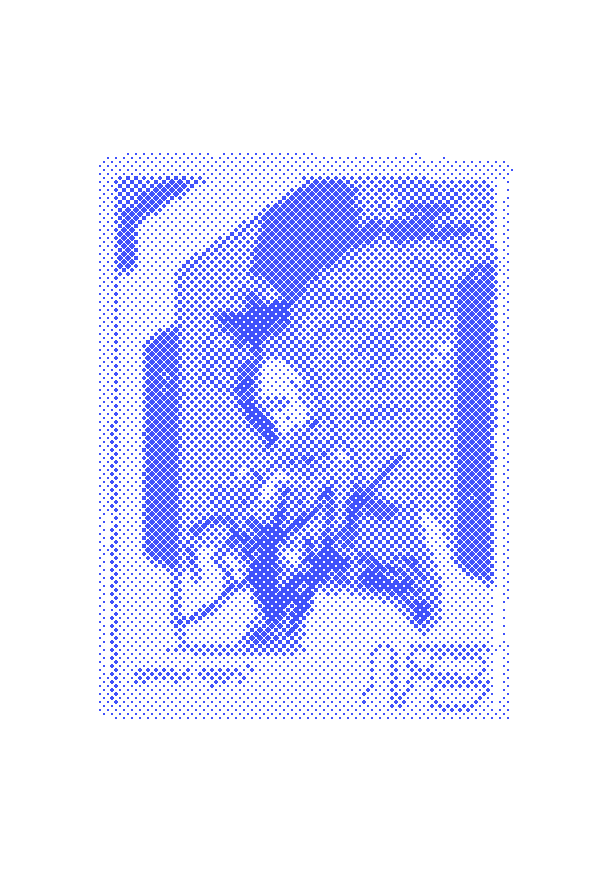

×
Al Kaline
Mr. Tiger
Albert William Kaline (born December 19, 1934), nicknamed "Mr. Tiger", is an American former Major League Baseball right fielder. He is a member of the Baseball Hall of Fame.[1][2] Kaline played his entire 22-year baseball career with the Detroit Tigers.[1] For most of his career, Kaline played in the outfield, mainly as a right fielder where he won ten Gold Gloves and was known for his strong throwing arm.[3] He was selected to 18 All-Star Games and was selected as an All-Star each year between 1955 and 1967.

×
Alan Trammell
Tram
Alan Stuart Trammell (born February 21, 1958) is an American former professional baseball shortstop, manager and coach. His entire 20-year playing career in Major League Baseball was with the Detroit Tigers. He currently serves as a special assistant to the General Manager of the Detroit Tigers.
LEARN MORE

×
Brandon Inge
Whirling Dervish
Charles Brandon Inge (born May 19, 1977) is an American former professional baseball third baseman and catcher. He played 12 seasons with the Detroit Tigers, one with the Oakland Athletics and one with the Pittsburgh Pirates of Major League Baseball (MLB). He bats and throws right-handed.
Sportswriter Jayson Stark described Inge as a "super-utility dervish."[1] In 2006, his diving stop and subsequent throw from his knees to put out Gary Bennett in an interleague game, on June 25 against the St. Louis Cardinals earned him the ESPN defensive play of the year for a third baseman.[2]
LEARN MORE